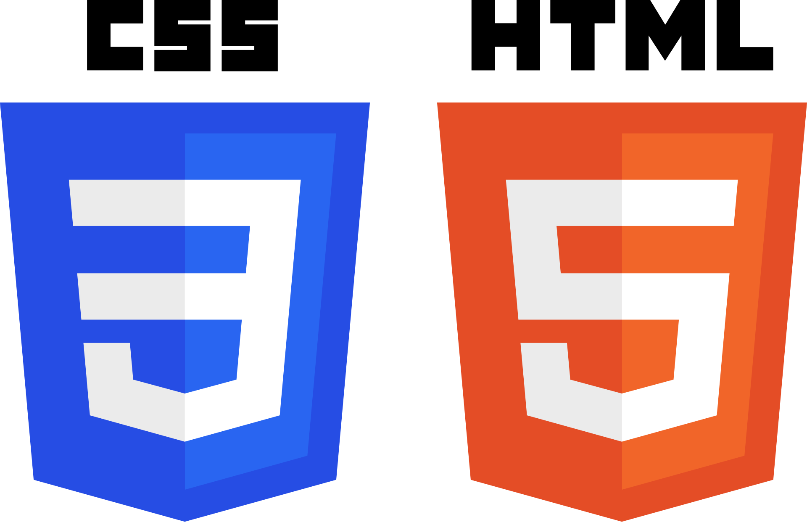

Technical Skills
Languages
 Java
Java
Developed Minecraft plugins using Java, applying OOP concepts and event-driven programming.
80%

HTML/CSSBuilt a responsive website to showcase behind-the-scenes photos of an event.
75%
 C++ (Game Plugin Development)
C++ (Game Plugin Development)
Created SourceMod plugins for L4D2 servers, debugging and customization.
90%
Tools
 Visual Studio Code
Visual Studio Code
Used as my primary code editor for web development and Java projects.
90%
 GitHub
GitHub
Experienced in version control and project collaboration using GitHub repositories.
60%
 Canva
Canva
Designed simple graphics and layouts for web projects and presentations.
70%
My Projects
Minecraft Plugin
Developed custom plugins using Java, adding new gameplay mechanics and event-driven features.
Tech: Java, OOP
Event Photo Website
Built a responsive site to showcase behind-the-scenes photos of an event, optimized for mobile and desktop.
Tech: HTML, CSS
HTML/CSS
 JavaScript
JavaScript
 RWD
RWD
L4D2 SourceMod Plugin
Created plugins for custom server rules, debugging and gameplay customization in Left 4 Dead 2.
Tech: SourceMod, C++ basics
SourceMod
C++
Server
Education & Achievements
Created custom game plugins for L4D2 servers, applying scripting and debugging skills.
2026
Completed coursework in web development and built a responsive event website.
2024
2025
Developed my first Java GUI project using NetBeans and Swing.
2023
Started learning HTML & CSS fundamentals, building simple static pages.